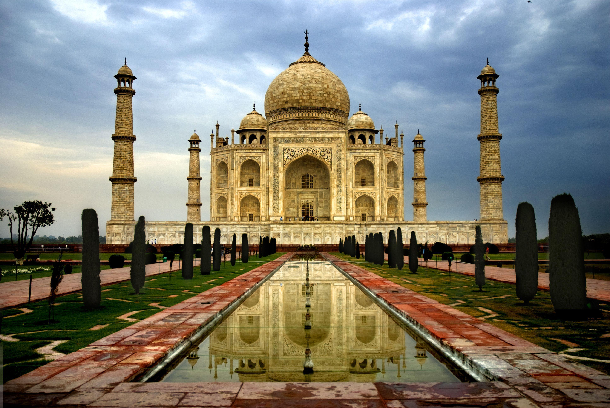
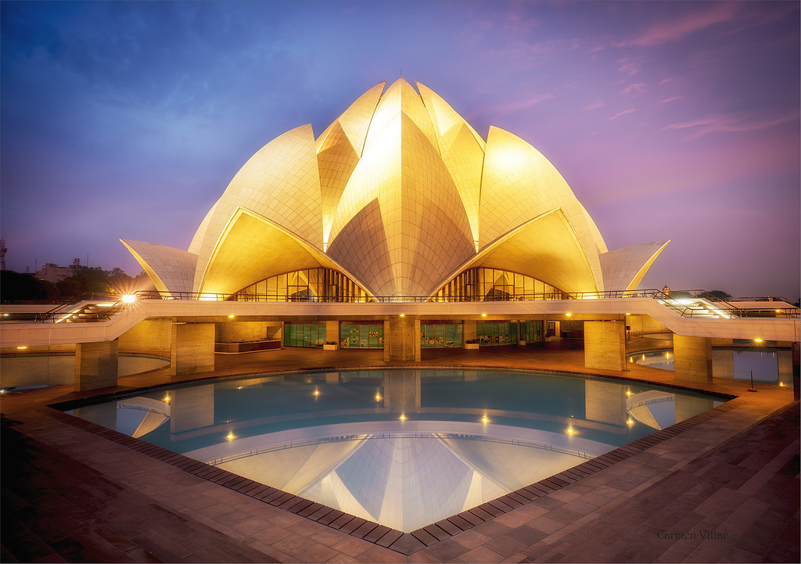

TAJ MAHAL

GOA

A city that has seen so much and yet the essence of its old days can be seen and observed is no less than a gem. That’s right, the city of Varanasi can surely be crowned as the spiritual capital of India if only one would take a stroll in the streets listening to the temple bells on the ghats. Make sure you spend some quiet time on the ghats of river Ganges to soothe your soul while you’re in this city! It is undoubtedly one of the best places to visit with parents in India!
Being naturally festive, the Pink City of Rajasthan is one of the best holiday destinations for kids and families of all kinds. A city full of architectural marvels, forts and palaces, well-manicured gardens, and unique courtyards and museums, it makes a great destination for the whole family to enjoy within the city as well as at some of the best picnic spots near Jaipur.
Serving as a home to the many pilgrimage sites of the Buddhist population, as well as a base camp for the trekkers and adventure enthusiasts, Gangtok is the also famous for offering the most scintillating views of the Himalayas.
know moreIf Kerala is God’s own country, the Alleppey is its best paradise. Alleppey has a lot more than what meets the eye which makes it one of the best family holiday destinations in India as well.
know moreThough this offbeat gem does not seem ideal to be counted in one of the best family holiday destinations in India, many families have broken this stereotypical perception by exploring the best of Ladakh in winter.
know more